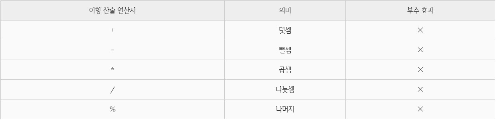
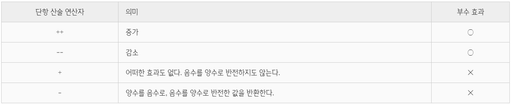
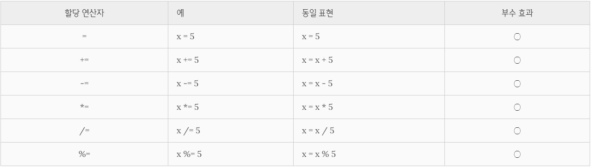
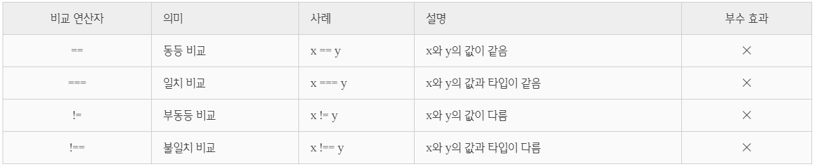
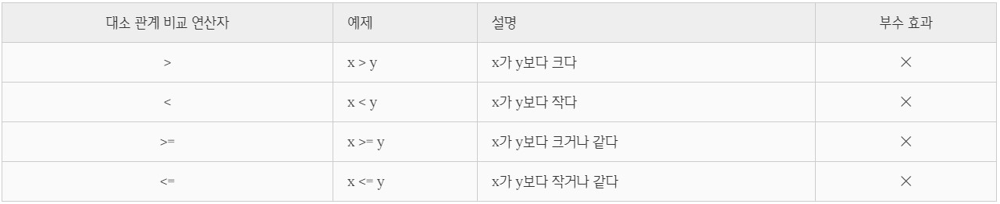
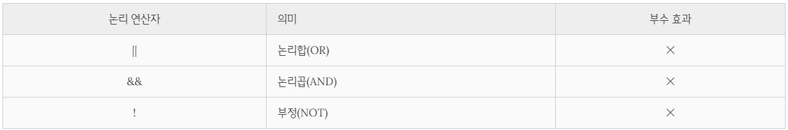

Table of Contents
- 1) 산술 연산자
- 1.1. 이항 산술 연산자
- 1.2. 다항 산술 연산자
- 1.3. 문자열 연결 연산자
- 2) 할당 연산자
- 3) 비교 연산자
- 3.1. 동등 / 일치 비교 연산자
- 3.2. 대소 관계 비교 연산자
- 4) 삼항 조건 연산자
- 5) 논리 연산자
- 6) 쉼표 연산자
- 7) 그룹 연산자
- 8) typeof 연산자
- 9) 지수 연산자
- 10) 연산자의 부수 효과
- 연산자(operator) : 규칙에 의해 결과를 나타내는 기호
- 피연산자는 연산의 대상이 되어야 하므로 값으로 평가할 수 있어야 함
1) 산술 연산자
수 계산에 필요한 연산자
산술 연산이 불가능한 경우 NaN을 반환
1.1. 이항 산술 연산자
- 2개의 피연산자를 산술 연산
- 피연산자의 값을 변경하는 부수 효과(side effect)가 없음

1.2. 다항 산술 연산자
- 1개의 피연산자를 산술 연산
- 증가/감소(++/–) 연산자는 피연산자의 값을 변경하는 부수 효과 존재
cf. 부수효과가 존재하는 연산자 : 증가,감소 연산자(++/–), 할당 연산자(=,+=,-=,*=,/=,%=), delete 연산자

증가/감소(++/–) 연산자는 위치에 의미가 있다.
1
2
3
4
5
6
7
8
9
10
11
12
13
14
15
16
17
18
| var x = 5,
result;
result = x++;
console.log(result, x);
result = ++x;
console.log(result, x);
result = x--;
console.log(result, x);
result = --x;
console.log(result, x);
|
아래 두 예시에서도 연산자 위치에 따라 결과가 달라짐을 알 수 있다.
1
2
| let i = 0;
while (++i < 5) alert( i );
|
1
2
| let i = 0;
while (i++ < 5) alert( i );
|
숫자 타입이 아닌 피연산자에 + 단항 연산자를 사용하면
→ 피연산자를 숫자 타입으로 변환하여 반환
1
2
3
4
5
6
| var x = "1";
console.log(+x);
console.log(x);
|
- 단항 연산자는 피연산자의 부호를 반전한 값을 반환
1.3. 문자열 연결 연산자
연산자는 피연산자 중 하나 이상이 문자열인 경우 문자열 연결 연산자로 동작
2) 할당 연산자
- 좌항의 변수에 값을 할당하므로 변수 값이 변하는 부수 효과가 존재한다.
- 할당문→ 값으로 평가되는 표현식인 문!

3) 비교 연산자
3.1. 동등 / 일치 비교 연산자

- 동등 비교(==) 연산자 : 암묵적 타입 변환을 통해 타입을 일치시킨 후, 같은 값인지 비교
- 일치 비교(===) 연산자 : 타입도 같고 값도 같은 경우에 한하여 true를 반환
1
2
3
4
5
6
|
5 == "5";
5 === "5";
5 === 5;
|
- (🔴주의!) NaN은 자신과 일치하지 않는 유일한 값이다.
3.2. 대소 관계 비교 연산자

4) 삼항 조건 연산자
- 📒 삼항 조건 연산자 :
조건식 ? 조건식이 true일 때 반환할 값 : 조건식이 false일 때 반환할 값
1
2
3
4
5
| var x = 2;
var result = x % 2 ? '홀수' : '짝수';
console.log(result);
|
- if…else 문을 사용해도 삼항 조건 연산자 표현식과 유사하게 처리 가능하다.
1
2
3
4
5
6
| var x = 2, result;
if (x % 2) result = '홀수';
else result = '짝수';
console.log(result);
|
- 차이점 :
삼항 조건 연산자 표현식은 값처럼 사용할 수 있지만
if…else 문은 값처럼 사용할 수 없다.
1
2
3
4
5
| var x = 10;
var result = x % 2 ? '홀수' : '짝수';
console.log(result);
|
1
2
3
4
5
| var x = 10;
var result = if (x % 2) { result = '홀수'; } else { result = '짝수'; };
|
5) 논리 연산자
- && : 모두 true면 true
- || : 모두 false면 false

- 논리합(||) 또는 논리곱(&&) 연산자 표현식의 평가 결과는 불리언 값이 아닐 수도 있다.
논리합(||) 또는 논리곱(&&) 연산자 표현식은 언제나 2개의 피연산자 중 어느 한쪽으로 평가된다. (9.4 단축평가 참고)
1
2
| !(x || y) === (!x && !y)
!(x && y) === (!x || !y)
|
6) 쉼표 연산자
- 왼쪽 피연산자부터 차례대로 피연산자를 평가하고 마지막 피연산자의 평가가 끝나면 마지막 피연산자의 평가 결과를 반환한다.
1
2
3
| var x, y, z;
(x = 1), (y = 2), (z = 3);
|
7) 그룹 연산자
- 소괄호 ()로 피연산자를 감싼다.
- 연산자 우선순위가 가장 높다.
8) typeof 연산자
- 피연산자의 데이터 타입을 문자열로 반환
- 7가지 문자열 “string”, “number”, “boolean”, “undefined”, “symbol”, “object”, “function” 중 하나를 반환
- (🔴주의!) null 값을 연산해 보면 “null”이 아닌 “object”를 반환
그러므로 값이 null 타입인지 확인할 때는 일치 연산자(===)를 사용할 것
- (🔴주의!) 선언하지 않은 식별자를 typeof 연산자로 연산해 보면 ReferenceError가 발생하지 않고 undefined를 반환
1
2
3
4
5
6
7
8
9
10
11
12
13
14
| typeof ''
typeof 1
typeof NaN
typeof true
typeof undefined
typeof Symbol()
typeof null
typeof []
typeof {}
typeof new Date()
typeof /test/gi
typeof function () {}
typeof undeclared;
|
9) 지수 연산자
- 좌항의 피연산자를 밑으로, 우항의 피연산자를 지수로 거듭 제곱한다.
- 지수 연산자는 이항 연산자 중에서 우선순위가 가장 높다.
1
2
3
| 2 ** 2;
2 ** 0;
(-5) ** 2;
|
10) 연산자의 부수 효과
일부 연산자는 다른 코드에 영향을 주는 부수 효과(side effect)가 있다. 부수 효과가 있는 연산자는 다음과 같다.
- 증가/감소(++/–-) 연산자
- 할당(=) 연산자
- delete 연산자
1
2
3
4
5
6
7
8
9
10
11
12
13
14
15
16
17
18
| var x;
x = 1;
console.log(x);
x++;
console.log(x);
var o = { a: 1 };
delete o.a;
console.log(o);
|
Reference